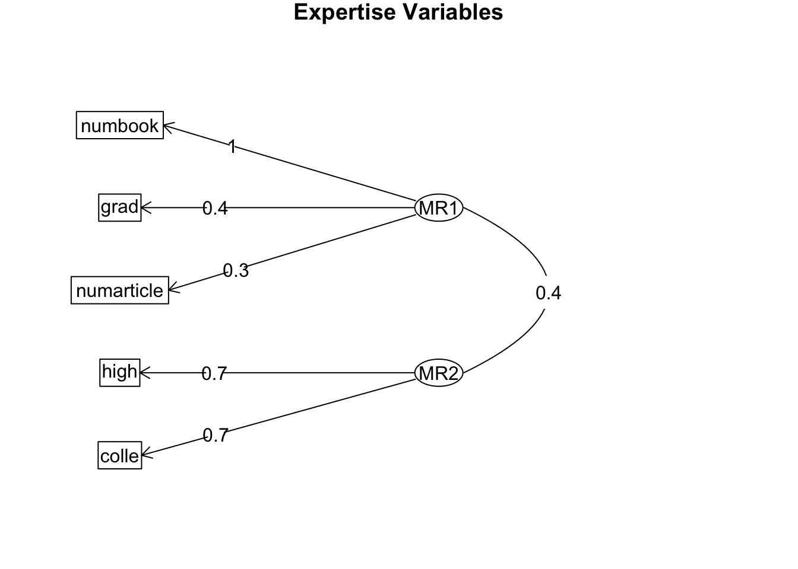

#Import library ----
library(tidyverse)
library(readr)
library(purrr)
#Read the csv file ----
Expertise3 <- read_csv("~/Desktop/Expertise3_December 23, 2022_10.53.csv")This post includes the trial analyses of an example data related to expertise.
Import necessary packages and expertise data
Creates a new dataframe called expertise3_clean, which is a copy of the original dataframe called Expertise3 and removes the second row of the dataframe and create a variable called column_names and assign it the names of the columns in the dataframe and change the column names
#removes the second row of the dataframe
expertise3_clean<-Expertise3%>%
slice(-2)
#selects all columns except the ones listed
expertise3_clean <- expertise3_clean %>%
select(-StartDate, -EndDate, -Status, -Progress,-ResponseId,-RecordedDate,-RecipientLastName, -RecipientFirstName,-RecipientEmail, -ExternalReference, -LocationLatitude,-LocationLongitude, -DistributionChannel, -UserLanguage)
#create a variable called column_names and assign it the names of the columns in the dataframe
column_names <- names(expertise3_clean)
##Change the column names ----
colnames(expertise3_clean) <- c('ip','duration', 'finished', 'stih_lang','r_ih_lang','stih_school','r_ih_school',
'stih_cards','r_ih_cards','stih_breakfast','r_ih_breakfast','stih_weddings','r_ih_weddings',
'stih_teeth','r_ih_teeth','stih_traffic','r_ih_traffic','stih_tv','r_ih_tv',
'know_lang','know_school','know_cards','know_breakfast','know_weddings','know_teeth',
'know_traffic','know_tv',
'course_lang','high_lang', 'colle_lang', 'grad_lang',
'book_lang','numbook_lang','article_lang','numarticle_lang',
'course_school','high_school', 'colle_school', 'grad_school',
'book_school','numbook_school','article_school','numarticle_school',
'course_cards','high_cards', 'colle_cards', 'grad_cards',
'book_cards','numbook_cards','article_cards','numarticle_cards',
'course_breakfast','high_breakfast', 'colle_breakfast', 'grad_breakfast',
'book_breakfast','numbook_breakfast','article_breakfast','numarticle_breakfast',
'course_weddings','high_weddings', 'colle_weddings', 'grad_weddings',
'book_weddings','numbook_weddings','article_weddings','numarticle_weddings',
'course_teeth','high_teeth', 'colle_teeth', 'grad_teeth',
'book_teeth','numbook_teeth','article_teeth','numarticle_teeth',
'course_traffic','high_traffic', 'colle_traffic', 'grad_traffic',
'book_traffic','numbook_traffic','article_traffic','numarticle_traffic',
'course_tv','high_tv', 'colle_tv', 'grad_tv',
'book_tv','numbook_tv','article_tv','numarticle_tv',
'needforcog1','needforcog2','needforcog3','needforcog4','needforcog5','needforcog6',
'needforcog7','needforcog8','needforcog9','needforcog10','needforcog11','needforcog12',
'needforcog13','needforcog14','needforcog15','needforcog16','needforcog17','needforcog18',
'otherways','sex','birthdate','education','income','religion','identity','age','political_atti',
'english_level','proceure_confu','whatwestudied','moretothisstudy','additional_thoughts','attention')The code below shows the survey items:
#selects all columns except the ones specified
row_values <- expertise3_clean %>%
select(-duration,-finished, -ip)%>%
#selects only the first row
filter(row_number() == 1)
#Items in the questionnaire ----
#unlist the row_values
row_values <- unlist(row_values)
my_list <- map(row_values, ~paste0(.))
library(stringr)
my_list <- str_replace(my_list, "(?<! )\\n(?! )", "")
my_list <- str_replace(my_list, "[^\\s]*\\\\n[^\\s]*", "")
list_string <- paste0("* ", paste(my_list, collapse = "\n* "))
##Show the survey items ----
cat(list_string)* Human languages are structured to best convey ourthoughts and feelings. Words and their meanings likely form ideal matches.
* There are absolutely no good reasons whywe use specific words to represent our thoughts. Any combination of sounds
could in principle refer to any idea.
* The fact that elementary school stops at 5th grade is probably ideal for children's learning. This is likely the best way to organize K-12 schooling.
* Middle school (grades 6-8) is separate from elementary school (grades K-5) largely because of decisions made by educators a long time ago. This may not be the most optimal way of organizing early education.
* It’s not a coincidence thatwe send people cards on holidays. This tradition seems
particularly fitting.
* The fact that we send people cards on holidays is only a convention. A different way of sending warm wishes could've been implemented just as easily.
* There are good reasons why orange juiceis typically consumed for breakfast. There are features about it that make it
particularly suited for this meal (for example, its refreshing taste).
* The current popularity of orange juice for breakfast reflectsin part marketing campaigns that promoted
drinking orange juice in the morning. However, had history taken a different
turn, orange juice could just as easily have been more popular for lunch or
dinner.
* It seems right to use white for wedding dresses. Othercolors, such as red and blue, have features that make them less suited for
wedding dresses.
* Even though white is thetraditional color for wedding dresses, this could have easily been different.
When you really think about it, there is no reason why other, brighter, colors couldn’t
be used for wedding dresses.
* It seems ideal that toothpaste istypically flavored with mint. Mint is inherently more refreshing than any other
flavor that currently exists.
* When you think about it, toothpaste could have easily beenflavored with something other than mint, such as cinnamon. Many pleasing flavors would work just as
well.
* Traffic lights, with threedifferent colored lights signaling three speeds, seem like the most efficient
and effective way to direct traffic. Another process likely would not work as
well.
* The current design of traffic lights,with three different colors reflecting three different speeds, is entirely due
to historical factors. This is probably not the most efficient or effective way
to manage traffic.
* Black seems like a good choice for the color of televisions. Other colors just would not work as well.
* Theonly reason why most TVs are black is
historical happenstance. TVs could practically be a
variety of colors.
* How much do you know about language and linguistics? - Please use the slider to select your answer choice.
* How much do you know about school and education systems? - Please use the slider to select your answer choice.
* How much do you know about holiday customs and traditions? - Please use the slider to select your answer choice.
* How much do you know about breakfast foods? - Please use the slider to select your answer choice.
* How much do you know about weddings and wedding traditions? - Please use the slider to select your answer choice.
* How much do you know about teeth and oral hygiene? - Please use the slider to select your answer choice.
* How much do you know about transportation science and traffic signal systems? - Please use the slider to select your answer choice.
* How much do you know about the manufacturing of consumer electronics (TVs, MP3 players, camcorders, etc.)? - Please use the slider to select your answer choice.
* Have you ever taken a class that discussed language and linguistics?
* If you answered "yes" above, please approximate the number of classes of this sort you took in: - High School
* If you answered "yes" above, please approximate the number of classes of this sort you took in: - College
* If you answered "yes" above, please approximate the number of classes of this sort you took in: - Graduate School
* Have you ever read any books on language and linguistics?
* If you answered "yes" above, please approximate the number of books you have read on this topic:
* Have you ever read any magazine, newspaper, or academic articles on language and linguistics?
* If you answered "yes" above, please approximate the number of articles you have read on this topic:
* Have you ever taken a class that discussed school and education systems?
* If you answered "yes" above, please approximate the number of classes of this sort you took in: - High School
* If you answered "yes" above, please approximate the number of classes of this sort you took in: - College
* If you answered "yes" above, please approximate the number of classes of this sort you took in: - Graduate School
* Have you ever read any books on school and education systems?
* If you answered "yes" above, please approximate the number of books you have read on this topic:
* Have you ever read any magazine, newspaper, or academic articles on school and education systems?
* If you answered "yes" above, please approximate the number of articles you have read on this topic:
* Have you ever taken a class that discussed holiday customs and traditions?
* If you answered "yes" above, please approximate the number of classes of this sort you took in: - High School
* If you answered "yes" above, please approximate the number of classes of this sort you took in: - College
* If you answered "yes" above, please approximate the number of classes of this sort you took in: - Graduate School
* Have you ever read any books on holiday customs and traditions?
* If you answered "yes" above, please approximate the number of books you have read on this topic:
* Have you ever read any magazine, newspaper, or academic articles on holiday customs and traditions?
* If you answered "yes" above, please approximate the number of articles you have read on this topic:
* Have you ever taken a class that discussed breakfast foods?
* If you answered "yes" above, please approximate the number of classes of this sort you took in: - High School
* If you answered "yes" above, please approximate the number of classes of this sort you took in: - College
* If you answered "yes" above, please approximate the number of classes of this sort you took in: - Graduate School
* Have you ever read any books on breakfast foods?
* If you answered "yes" above, please approximate the number of books you have read on this topic:
* Have you ever read any magazine, newspaper, or academic articles on breakfast foods?
* If you answered "yes" above, please approximate the number of articles you have read on this topic:
* Have you ever taken a class that discussed weddings and wedding traditions?
* If you answered "yes" above, please approximate the number of classes of this sort you took in: - High School
* If you answered "yes" above, please approximate the number of classes of this sort you took in: - College
* If you answered "yes" above, please approximate the number of classes of this sort you took in: - Graduate School
* Have you ever read any books on weddings and wedding traditions?
* If you answered "yes" above, please approximate the number of books you have read on this topic:
* Have you ever read any magazine, newspaper, or academic articles on weddings and wedding traditions?
* If you answered "yes" above, please approximate the number of articles you have read on this topic:
* Have you ever taken a class that discussed teeth and oral hygiene?
* If you answered "yes" above, please approximate the number of classes of this sort you took in: - High School
* If you answered "yes" above, please approximate the number of classes of this sort you took in: - College
* If you answered "yes" above, please approximate the number of classes of this sort you took in: - Graduate School
* Have you ever read any books on teeth and oral hygiene?
* If you answered "yes" above, please approximate the number of books you have read on this topic:
* Have you ever read any magazine, newspaper, or academic articles on teeth and oral hygiene?
* If you answered "yes" above, please approximate the number of articles you have read on this topic:
* Have you ever taken a class that discussed transportation science and traffic signal systems?
* If you answered "yes" above, please approximate the number of classes of this sort you took in: - High School
* If you answered "yes" above, please approximate the number of classes of this sort you took in: - College
* If you answered "yes" above, please approximate the number of classes of this sort you took in: - Graduate School
* Have you ever read any books on transportation science and traffic signal systems?
* If you answered "yes" above, please approximate the number of books you have read on this topic:
* Have you ever read any magazine, newspaper, or academic articles on transportation science and traffic signal systems?
* If you answered "yes" above, please approximate the number of articles you have read on this topic:
* Have you ever taken a class that discussed the manufacturing of consumer electronics (TVs, MP3 players, camcorders, etc.)?
* If you answered "yes" above, please approximate the number of classes of this sort you took in: - High School
* If you answered "yes" above, please approximate the number of classes of this sort you took in: - College
* If you answered "yes" above, please approximate the number of classes of this sort you took in: - Graduate School
* Have you ever read any books on the manufacturing of consumer electronics (TVs, MP3 players, camcorders, etc.)?
* If you answered "yes" above, please approximate the number of books you have read on this topic:
* Have you ever read any magazine, newspaper, or academic articles on the manufacturing of consumer electronics (TVs, MP3 players, camcorders, etc.)?
* If you answered "yes" above, please approximate the number of articles you have read on this topic:
* I would prefer complex to simple problems.
* I like to have the responsibility of handling a situation that requires a lot of thinking.
* Thinking is not my idea of fun.
* I would rather do something that requires little thought than something that is sure to challenge my thinking abilities.
* I try to anticipate and avoid situations where there is a likely chance I will have to think in depth about something.
* I find satisfaction in deliberating hard and long for hours.
* I only think as hard as I have to.
* I prefer to think about small, daily projects rather than long-term ones.
* I like tasks that require little thought once I’ve learned them.
* The idea of relying on thought to make my way to the top appeals to me.
* I really enjoy a task that involves coming up with new solutions to problems.
* Learning new ways to think doesn’t excite me very much.
* I prefer my life to be filled with puzzles that I must solve.
* The notion of thinking abstractly appeals to me.
* I would prefer a task that is intellectual, difficult, and important to one that is somewhat important but does not require much thought.
* I feel relief rather than satisfaction after completing a task that required a lot of mental effort.
* It’s enough for me that something gets the job done; I don’t care about why or how it works.
* I usually end up deliberating about issues even when they do not affect me personally.
* In this survey you were asked about your knowledge in a variety of subject areas.
Aside from the ways you may have learned about these topics that were mentioned in the survey (i.e., reading or a college class), how else may you have learned about these topics? Please name other ways that you have learned about the topics mentioned in the survey you just took.
* Are you male or female?
* Q60 - What is your date of birth? (mm/dd/yyyy)
* What is the highest level of education you have completed?
* Q64 - What is your yearly household income?
* Q64 - What is your religious affiliation?
* Q64 - What is your racial or ethnic identity?
* Q64 - What is your age in years?
* How would you describe your political attitudes? Please select one of the points on the scale below.
* Please rate your overall ability in the English language:
* 1. Did you find any aspect of the procedure odd or confusing?
* 2. What did you think we were studying?
* 3. Do you think that there may have been more to this study than meets the eye? If so, what do you think this might have been?
* 4. Do you have any additional thoughts or comments about the study?
* Thank you for completing this survey! We just have one last question for you. You will not be penalized for your answer to this question. Since you completed the whole survey, you will receive payment no matter what answer you give here.
It's very important to the quality and scientific aims of our study that participants pay attention (i.e., read the survey carefully, consider the response options, and avoid distractions).
Were you paying attention while completing this survey?Data preparation for further analyses
#Attention check and deletion of cases that didn't attend or finish the study ----
expertise3_new<-expertise3_clean%>%
filter(attention==1&finished==1)
##Exclude the participants that joined outside of US ----
#view(expertise3_new)
expertise3_new<-expertise3_new%>%
filter(ip!="37.221.172.194")
expertise3_new <- expertise3_new %>%
filter(!(ip %in% c("77.198.10.26", "83.233.218.246", "189.172.66.106", "190.167.6.137")))
##selecting the columns that we want to keep ----
expertise3_new<-expertise3_new%>%
select(-finished,-otherways,-birthdate,-proceure_confu,-whatwestudied,-moretothisstudy,-additional_thoughts,-attention)
#adds a column to the dataframe, with the name "id"
expertise3_new<-cbind(ID = 1:nrow(expertise3_new), expertise3_new)
# Numeric variables ----
# Change the data type of the variables to numeric
expertise3_new <- expertise3_new %>%
mutate_at(vars(stih_lang, r_ih_lang, stih_school, r_ih_school, stih_cards, r_ih_cards, stih_breakfast, r_ih_breakfast,
stih_weddings, r_ih_weddings, stih_teeth, r_ih_teeth, stih_traffic, r_ih_traffic, stih_tv, r_ih_tv), as.numeric)Check the correlations between inherence (the variables starting with st) and reverse inherence (the variables starting with r) scores to check whether it’s appropriate for averaging
# Correlations between ih scores ----
# Create a list of variable names
variables <- c("stih_lang", "r_ih_lang", "stih_school", "r_ih_school", "stih_cards", "r_ih_cards", "stih_breakfast", "r_ih_breakfast", "stih_weddings", "r_ih_weddings", "stih_teeth", "r_ih_teeth", "stih_traffic", "r_ih_traffic", "stih_tv", "r_ih_tv")
# Initialize an empty data frame to store the correlation coefficients
correlations <- data.frame(variable1 = character(), variable2 = character(), correlation = numeric(), p.value = numeric(), conf.int = character())
# Iterate over the pairs of variables
for (i in seq(1, length(variables), 2)) {
j <- i + 1
# Calculate the Pearson correlation coefficient and test the statistical significance
correlation_test <- cor.test(expertise3_new[, variables[i]], expertise3_new[, variables[j]], method = "pearson")
# Add the correlation coefficient, p-value, and confidence interval to the data frame
correlations <- rbind(correlations, data.frame(variable1 = variables[i], variable2 = variables[j], correlation = correlation_test$estimate, p.value = correlation_test$p.value, conf.int = paste(correlation_test$conf.int[1], correlation_test$conf.int[2], sep = " - ")))
}
## View the correlation coefficients and statistical measures ----
correlations variable1 variable2 correlation p.value
cor stih_lang r_ih_lang -0.6112615 8.942654e-22
cor1 stih_school r_ih_school -0.5181904 4.547542e-15
cor2 stih_cards r_ih_cards -0.5395115 2.001074e-16
cor3 stih_breakfast r_ih_breakfast -0.3813141 2.751024e-08
cor4 stih_weddings r_ih_weddings -0.5222404 2.554910e-15
cor5 stih_teeth r_ih_teeth -0.4231281 5.283701e-10
cor6 stih_traffic r_ih_traffic -0.4832966 4.822560e-13
cor7 stih_tv r_ih_tv -0.3396313 9.221208e-07
conf.int
cor -0.691555186062648 - -0.516045968176506
cor1 -0.613091701381407 - -0.40854648901427
cor2 -0.631233272015308 - -0.432907170777665
cor3 -0.494193465446722 - -0.255790470305453
cor4 -0.61654545073014 - -0.413161868080018
cor5 -0.531226389630016 - -0.301474099514304
cor6 -0.583183953827757 - -0.36901235203396
cor7 -0.457126840023376 - -0.210484471909784It seems that each pairs have negative significant correlation, so we can take the average scores to calculate inherence scores
## Average of ih scores ----
#It seems that each pairs have negative significant correlation, so we can take the average scores to measure inherence scores
expertise3_new <- expertise3_new %>%
mutate(ih_lang = (stih_lang + (10 - r_ih_lang))/2,
ih_school = (stih_school + (10 - r_ih_school)) / 2,
ih_cards = (stih_cards + (10 - r_ih_cards)) / 2,
ih_breakfast = (stih_breakfast + (10 - r_ih_breakfast)) / 2,
ih_weddings = (stih_weddings + (10 - r_ih_weddings)) / 2,
ih_teeth = (stih_teeth + (10 - r_ih_teeth)) / 2,
ih_traffic = (stih_traffic + (10-r_ih_traffic)) / 2,
ih_tv = (stih_tv + (10-r_ih_tv)) / 2 )Calculate “Need for cognition” scale scores
# Need for cognition scale scores ----
# change the data type of the variables to numeric
expertise3_new <- expertise3_new %>%
mutate_at(vars(needforcog1,needforcog2,needforcog3,needforcog4,needforcog5,needforcog6
,needforcog7,needforcog8,needforcog9,needforcog10,needforcog11,needforcog12,
needforcog13,needforcog14,needforcog15,needforcog16,needforcog17,needforcog18), as.numeric)
## Calculate needforcog scores ----
#add a new variable called needforcog, which is the sum of all the need for cognition items, the items are weighted according to the scoring key
expertise3_new <- expertise3_new %>%
group_by(ID)%>%
mutate(needforcog=(needforcog1+needforcog2+
(10-needforcog3)+(10-needforcog4)+(10-needforcog5)+needforcog6+
(10-needforcog7)+(10-needforcog8)+(10-needforcog9)+
needforcog10+needforcog11+(10-needforcog12)+
needforcog13+needforcog14+needforcog15+
(10-needforcog16)+(10-needforcog17)+needforcog18)/18)Prepare the expertise scores and other scores ready for analyses
# Replace expertise variables' NA values in the expertise columns with 0 ----
variables <- c('high_lang', 'colle_lang', 'grad_lang',
'numbook_lang','numarticle_lang',
'high_school', 'colle_school', 'grad_school',
'numbook_school','numarticle_school',
'high_cards', 'colle_cards', 'grad_cards',
'numbook_cards','numarticle_cards',
'high_breakfast', 'colle_breakfast', 'grad_breakfast',
'numbook_breakfast','numarticle_breakfast',
'high_weddings', 'colle_weddings', 'grad_weddings',
'numbook_weddings','numarticle_weddings',
'high_teeth', 'colle_teeth', 'grad_teeth',
'numbook_teeth','numarticle_teeth',
'high_traffic', 'colle_traffic', 'grad_traffic',
'numbook_traffic','numarticle_traffic',
'high_tv', 'colle_tv', 'grad_tv',
'numbook_tv','numarticle_tv')
expertise3_new[variables] <- lapply(expertise3_new[variables],
function(x) ifelse(is.na(x), 0, ifelse(x=='no',0,x)))
# Missing values in the dataframe ----
apply(is.na(expertise3_new), 2, sum) ID ip duration
0 0 0
stih_lang r_ih_lang stih_school
0 0 0
r_ih_school stih_cards r_ih_cards
0 0 0
stih_breakfast r_ih_breakfast stih_weddings
0 0 0
r_ih_weddings stih_teeth r_ih_teeth
0 1 1
stih_traffic r_ih_traffic stih_tv
0 0 0
r_ih_tv know_lang know_school
0 0 0
know_cards know_breakfast know_weddings
0 0 0
know_teeth know_traffic know_tv
0 1 0
course_lang high_lang colle_lang
0 0 0
grad_lang book_lang numbook_lang
0 0 0
article_lang numarticle_lang course_school
0 0 1
high_school colle_school grad_school
0 0 0
book_school numbook_school article_school
0 0 1
numarticle_school course_cards high_cards
0 0 0
colle_cards grad_cards book_cards
0 0 0
numbook_cards article_cards numarticle_cards
0 1 0
course_breakfast high_breakfast colle_breakfast
0 0 0
grad_breakfast book_breakfast numbook_breakfast
0 0 0
article_breakfast numarticle_breakfast course_weddings
1 0 0
high_weddings colle_weddings grad_weddings
0 0 0
book_weddings numbook_weddings article_weddings
1 0 0
numarticle_weddings course_teeth high_teeth
0 0 0
colle_teeth grad_teeth book_teeth
0 0 0
numbook_teeth article_teeth numarticle_teeth
0 0 0
course_traffic high_traffic colle_traffic
0 0 0
grad_traffic book_traffic numbook_traffic
0 0 0
article_traffic numarticle_traffic course_tv
0 0 0
high_tv colle_tv grad_tv
0 0 0
book_tv numbook_tv article_tv
0 0 1
numarticle_tv needforcog1 needforcog2
0 0 0
needforcog3 needforcog4 needforcog5
0 0 0
needforcog6 needforcog7 needforcog8
0 0 0
needforcog9 needforcog10 needforcog11
0 0 0
needforcog12 needforcog13 needforcog14
0 0 0
needforcog15 needforcog16 needforcog17
0 0 0
needforcog18 sex education
0 0 0
income religion identity
2 2 0
age political_atti english_level
0 0 0
ih_lang ih_school ih_cards
0 0 0
ih_breakfast ih_weddings ih_teeth
0 0 1
ih_traffic ih_tv needforcog
0 0 0 # Expertise Ready Df ----
# Create new data frame as analyzable
expertise3_new<-expertise3_new%>%
select(-stih_lang,-r_ih_lang,-stih_school,-r_ih_school,
-stih_cards,-r_ih_cards,-stih_breakfast,-r_ih_breakfast,
-stih_weddings,-r_ih_weddings,
-stih_teeth,-r_ih_teeth,-stih_traffic,-r_ih_traffic,
-stih_tv,-r_ih_tv,
-course_lang,
-book_lang,-article_lang,
-course_school,
-book_school,-article_school,
-course_cards,
-book_cards,-article_cards,
-course_breakfast,
-book_breakfast,-article_breakfast,
-course_weddings,
-book_weddings,-article_weddings,
-course_teeth,
-book_teeth,-article_teeth,
-course_traffic,
-book_traffic,-article_traffic,
-course_tv,
-book_tv,-article_tv,
-needforcog1,-needforcog2,-needforcog3,-needforcog4,-needforcog5,-needforcog6,
-needforcog7,-needforcog8,-needforcog9,-needforcog10,-needforcog11,-needforcog12,
-needforcog13,-needforcog14,-needforcog15,-needforcog16,-needforcog17,-needforcog18)
# change the data type of the variables to numeric
expertise3_new <- expertise3_new %>%
mutate_at(vars('know_lang','know_school','know_cards','know_breakfast',
'know_weddings','know_teeth','know_traffic','know_tv',
'high_lang', 'colle_lang', 'grad_lang',
'numbook_lang','numarticle_lang',
'high_school', 'colle_school', 'grad_school',
'numbook_school','numarticle_school',
'high_cards', 'colle_cards', 'grad_cards',
'numbook_cards','numarticle_cards',
'high_breakfast', 'colle_breakfast', 'grad_breakfast',
'numbook_breakfast','numarticle_breakfast',
'high_weddings', 'colle_weddings', 'grad_weddings',
'numbook_weddings','numarticle_weddings',
'high_teeth', 'colle_teeth', 'grad_teeth',
'numbook_teeth','numarticle_teeth',
'high_traffic', 'colle_traffic', 'grad_traffic',
'numbook_traffic','numarticle_traffic',
'high_tv', 'colle_tv', 'grad_tv',
'numbook_tv','numarticle_tv'), as.numeric)Long format of expertise dataset for factor analysis before standardization
library('reshape2')
expertise3_factor <- melt(expertise3_new, id.vars = c("ID",'duration',"sex" ,"education" ,"income","religion",'identity','age','political_atti','english_level','needforcog'),
measure.vars = c("ih_lang", "ih_school","ih_cards", "ih_breakfast", "ih_weddings",
"ih_teeth", "ih_traffic", "ih_tv",'know_lang','know_school','know_cards','know_breakfast',
'know_weddings','know_teeth','know_traffic','know_tv',
'high_lang', 'colle_lang', 'grad_lang',
'numbook_lang','numarticle_lang',
'high_school', 'colle_school', 'grad_school',
'numbook_school','numarticle_school',
'high_cards', 'colle_cards', 'grad_cards',
'numbook_cards','numarticle_cards',
'high_breakfast', 'colle_breakfast', 'grad_breakfast',
'numbook_breakfast','numarticle_breakfast',
'high_weddings', 'colle_weddings', 'grad_weddings',
'numbook_weddings','numarticle_weddings',
'high_teeth', 'colle_teeth', 'grad_teeth',
'numbook_teeth','numarticle_teeth',
'high_traffic', 'colle_traffic', 'grad_traffic',
'numbook_traffic','numarticle_traffic',
'high_tv', 'colle_tv', 'grad_tv',
'numbook_tv','numarticle_tv'),
sep = "_", variable.name = "Category", value.name = "Score")
# Split the Category column into two columns based on the underscore separator
expertise3_factor <- expertise3_factor %>% separate(Category, into = c("Category", "Score_Type"), sep = "_")
## spread the data from long to wide format ----
expertise3_fact <- expertise3_factor %>% spread(Category, Score)
# change the score type to a factor
expertise3_fact$Score_Type<-as.factor(expertise3_fact$Score_Type)
# convert the column ih to numeric
expertise3_fact$ih<-as.numeric(expertise3_fact$ih)Factor analysis for expertise variables with raw scores
# Import packages
library(psych) #PCA/EFA analysis
library(REdaS) #Produces KMO and Bartletts test
# Create a new dataframe that include only related variables
factor_exp0<-expertise3_fact%>%
select(colle, grad, high, numarticle, numbook)
# Check missing values
apply(is.na(factor_exp0), 2, sum) colle grad high numarticle numbook
0 0 0 0 0 # Since grad classes for TV category is missing (nobody takes any class in the sample), listwise deletion is applied here.
bart_spher(factor_exp0, use = "complete.obs") ###### produces Bartletts test of spherecity Bartlett's Test of Sphericity
Call: bart_spher(x = factor_exp0, use = "complete.obs")
X2 = 1028.145
df = 10
p-value < 2.22e-16KMO(factor_exp0) ###### Kaiser-Meyer-Olkin measure, which is above .5.Kaiser-Meyer-Olkin factor adequacy
Call: KMO(r = factor_exp0)
Overall MSA = 0.58
MSA for each item =
colle grad high numarticle numbook
0.57 0.59 0.56 0.56 0.60 # Let's check all the variables
fa(factor_exp0, nfactors = 5, rotate = "oblimin" ) Factor Analysis using method = minres
Call: fa(r = factor_exp0, nfactors = 5, rotate = "oblimin")
Standardized loadings (pattern matrix) based upon correlation matrix
MR1 MR2 MR3 MR4 MR5 h2 u2 com
colle 0.73 0.01 -0.01 0.07 0 0.56 0.44 1.0
grad -0.05 0.54 -0.05 0.08 0 0.31 0.69 1.1
high 0.73 -0.03 0.00 -0.06 0 0.51 0.49 1.0
numarticle -0.05 -0.05 0.56 0.01 0 0.28 0.72 1.0
numbook 0.14 0.37 0.38 0.06 0 0.57 0.43 2.3
MR1 MR2 MR3 MR4 MR5
SS loadings 1.11 0.53 0.52 0.08 0.00
Proportion Var 0.22 0.11 0.10 0.02 0.00
Cumulative Var 0.22 0.33 0.43 0.45 0.45
Proportion Explained 0.50 0.24 0.23 0.03 0.00
Cumulative Proportion 0.50 0.73 0.97 1.00 1.00
With factor correlations of
MR1 MR2 MR3 MR4 MR5
MR1 1.00 0.32 0.24 0.15 0
MR2 0.32 1.00 0.52 0.72 0
MR3 0.24 0.52 1.00 0.30 0
MR4 0.15 0.72 0.30 1.00 0
MR5 0.00 0.00 0.00 0.00 1
Mean item complexity = 1.3
Test of the hypothesis that 5 factors are sufficient.
The degrees of freedom for the null model are 10 and the objective function was 0.65 with Chi Square of 1028.15
The degrees of freedom for the model are -5 and the objective function was 0
The root mean square of the residuals (RMSR) is 0
The df corrected root mean square of the residuals is NA
The harmonic number of observations is 1592 with the empirical chi square 0 with prob < NA
The total number of observations was 1592 with Likelihood Chi Square = 0 with prob < NA
Tucker Lewis Index of factoring reliability = 1.01
Fit based upon off diagonal values = 1
Measures of factor score adequacy
MR1 MR2 MR3 MR4 MR5
Correlation of (regression) scores with factors 0.84 0.75 0.72 0.57 0
Multiple R square of scores with factors 0.71 0.57 0.52 0.32 0
Minimum correlation of possible factor scores 0.42 0.14 0.04 -0.36 -1# We may reduce it to 2 factors like media and classes
fa(factor_exp0, nfactors = 2, rotate = "oblimin" ) Factor Analysis using method = minres
Call: fa(r = factor_exp0, nfactors = 2, rotate = "oblimin")
Standardized loadings (pattern matrix) based upon correlation matrix
MR1 MR2 h2 u2 com
colle 0.06 0.72 0.55 0.455 1.0
grad 0.36 -0.01 0.13 0.875 1.0
high -0.05 0.73 0.51 0.488 1.0
numarticle 0.33 -0.06 0.10 0.900 1.1
numbook 0.97 0.00 0.95 0.052 1.0
MR1 MR2
SS loadings 1.18 1.05
Proportion Var 0.24 0.21
Cumulative Var 0.24 0.45
Proportion Explained 0.53 0.47
Cumulative Proportion 0.53 1.00
With factor correlations of
MR1 MR2
MR1 1.00 0.35
MR2 0.35 1.00
Mean item complexity = 1
Test of the hypothesis that 2 factors are sufficient.
The degrees of freedom for the null model are 10 and the objective function was 0.65 with Chi Square of 1028.15
The degrees of freedom for the model are 1 and the objective function was 0
The root mean square of the residuals (RMSR) is 0.01
The df corrected root mean square of the residuals is 0.03
The harmonic number of observations is 1592 with the empirical chi square 3.66 with prob < 0.056
The total number of observations was 1592 with Likelihood Chi Square = 5.04 with prob < 0.025
Tucker Lewis Index of factoring reliability = 0.96
RMSEA index = 0.05 and the 90 % confidence intervals are 0.014 0.098
BIC = -2.34
Fit based upon off diagonal values = 1
Measures of factor score adequacy
MR1 MR2
Correlation of (regression) scores with factors 0.97 0.84
Multiple R square of scores with factors 0.95 0.70
Minimum correlation of possible factor scores 0.90 0.41factor_dia0<-fa(factor_exp0, nfactors = 2, rotate = "oblimin" ) ##save the analysis as the object m1
fa.diagram(factor_dia0,main="Expertise Variables") 
It is interesting that grad courses are more related to media category than classes although the correlation strength -r values- were low. It may be related to active participation or effect of history (books/articles can be mostly read during grad courses or the remembered ones at least?). So here, in my sense, we may collect these items under active vs. passive involvement or contemporary (closer) expertise vs. older expertise.
Long format of expertise dataset
library('reshape2')
expertise3_long <- melt(expertise3_new, id.vars = c("ID",'duration',"sex" ,"education" ,"income","religion",'identity','age','political_atti','english_level','needforcog'),
measure.vars = c("ih_lang", "ih_school","ih_cards", "ih_breakfast", "ih_weddings",
"ih_teeth", "ih_traffic", "ih_tv",'know_lang','know_school','know_cards','know_breakfast',
'know_weddings','know_teeth','know_traffic','know_tv',
'high_lang', 'colle_lang', 'grad_lang',
'numbook_lang','numarticle_lang',
'high_school', 'colle_school', 'grad_school',
'numbook_school','numarticle_school',
'high_cards', 'colle_cards', 'grad_cards',
'numbook_cards','numarticle_cards',
'high_breakfast', 'colle_breakfast', 'grad_breakfast',
'numbook_breakfast','numarticle_breakfast',
'high_weddings', 'colle_weddings', 'grad_weddings',
'numbook_weddings','numarticle_weddings',
'high_teeth', 'colle_teeth', 'grad_teeth',
'numbook_teeth','numarticle_teeth',
'high_traffic', 'colle_traffic', 'grad_traffic',
'numbook_traffic','numarticle_traffic',
'high_tv', 'colle_tv', 'grad_tv',
'numbook_tv','numarticle_tv'),
sep = "_", variable.name = "Category", value.name = "Score")
# Split the Category column into two columns based on the underscore separator
expertise3_long <- expertise3_long %>% separate(Category, into = c("Category", "Score_Type"), sep = "_")
## spread the data from long to wide format ----
expertise3_ready <- expertise3_long %>% spread(Category, Score)
# change the score type to a factor
expertise3_ready$Score_Type<-as.factor(expertise3_ready$Score_Type)
# convert the column ih to numeric
expertise3_ready$ih<-as.numeric(expertise3_ready$ih)Factor analysis for expertise variables with standardized scores
# Import packages
library(psych) #PCA/EFA analysis
library(REdaS) #Produces KMO and Bartletts test
# Create a new dataframe that include only related variables
factor_exp<-expertise3_ready%>%
select(colle, grad, high, numarticle, numbook)
# Check missing values
apply(is.na(factor_exp), 2, sum) colle grad high numarticle numbook
0 0 0 0 0 # Since grad classes for TV category is missing (nobody takes any class in the sample), listwise deletion is applied here.
bart_spher(factor_exp, use = "complete.obs") ###### produces Bartletts test of spherecity Bartlett's Test of Sphericity
Call: bart_spher(x = factor_exp, use = "complete.obs")
X2 = 1028.145
df = 10
p-value < 2.22e-16KMO(factor_exp) ###### Kaiser-Meyer-Olkin measure, which is above .5.Kaiser-Meyer-Olkin factor adequacy
Call: KMO(r = factor_exp)
Overall MSA = 0.58
MSA for each item =
colle grad high numarticle numbook
0.57 0.59 0.56 0.56 0.60 # Let's check all the variables
fa(factor_exp, nfactors = 5, rotate = "oblimin" ) Factor Analysis using method = minres
Call: fa(r = factor_exp, nfactors = 5, rotate = "oblimin")
Standardized loadings (pattern matrix) based upon correlation matrix
MR1 MR2 MR3 MR4 MR5 h2 u2 com
colle 0.73 0.01 -0.01 0.07 0 0.56 0.44 1.0
grad -0.05 0.54 -0.05 0.08 0 0.31 0.69 1.1
high 0.73 -0.03 0.00 -0.06 0 0.51 0.49 1.0
numarticle -0.05 -0.05 0.56 0.01 0 0.28 0.72 1.0
numbook 0.14 0.37 0.38 0.06 0 0.57 0.43 2.3
MR1 MR2 MR3 MR4 MR5
SS loadings 1.11 0.53 0.52 0.08 0.00
Proportion Var 0.22 0.11 0.10 0.02 0.00
Cumulative Var 0.22 0.33 0.43 0.45 0.45
Proportion Explained 0.50 0.24 0.23 0.03 0.00
Cumulative Proportion 0.50 0.73 0.97 1.00 1.00
With factor correlations of
MR1 MR2 MR3 MR4 MR5
MR1 1.00 0.32 0.24 0.15 0
MR2 0.32 1.00 0.52 0.72 0
MR3 0.24 0.52 1.00 0.30 0
MR4 0.15 0.72 0.30 1.00 0
MR5 0.00 0.00 0.00 0.00 1
Mean item complexity = 1.3
Test of the hypothesis that 5 factors are sufficient.
The degrees of freedom for the null model are 10 and the objective function was 0.65 with Chi Square of 1028.15
The degrees of freedom for the model are -5 and the objective function was 0
The root mean square of the residuals (RMSR) is 0
The df corrected root mean square of the residuals is NA
The harmonic number of observations is 1592 with the empirical chi square 0 with prob < NA
The total number of observations was 1592 with Likelihood Chi Square = 0 with prob < NA
Tucker Lewis Index of factoring reliability = 1.01
Fit based upon off diagonal values = 1
Measures of factor score adequacy
MR1 MR2 MR3 MR4 MR5
Correlation of (regression) scores with factors 0.84 0.75 0.72 0.57 0
Multiple R square of scores with factors 0.71 0.57 0.52 0.32 0
Minimum correlation of possible factor scores 0.42 0.14 0.04 -0.36 -1# So we can reduce it to 2 factors
fa(factor_exp, nfactors = 2, rotate = "oblimin" ) Factor Analysis using method = minres
Call: fa(r = factor_exp, nfactors = 2, rotate = "oblimin")
Standardized loadings (pattern matrix) based upon correlation matrix
MR1 MR2 h2 u2 com
colle 0.06 0.72 0.55 0.455 1.0
grad 0.36 -0.01 0.13 0.875 1.0
high -0.05 0.73 0.51 0.488 1.0
numarticle 0.33 -0.06 0.10 0.900 1.1
numbook 0.97 0.00 0.95 0.052 1.0
MR1 MR2
SS loadings 1.18 1.05
Proportion Var 0.24 0.21
Cumulative Var 0.24 0.45
Proportion Explained 0.53 0.47
Cumulative Proportion 0.53 1.00
With factor correlations of
MR1 MR2
MR1 1.00 0.35
MR2 0.35 1.00
Mean item complexity = 1
Test of the hypothesis that 2 factors are sufficient.
The degrees of freedom for the null model are 10 and the objective function was 0.65 with Chi Square of 1028.15
The degrees of freedom for the model are 1 and the objective function was 0
The root mean square of the residuals (RMSR) is 0.01
The df corrected root mean square of the residuals is 0.03
The harmonic number of observations is 1592 with the empirical chi square 3.66 with prob < 0.056
The total number of observations was 1592 with Likelihood Chi Square = 5.04 with prob < 0.025
Tucker Lewis Index of factoring reliability = 0.96
RMSEA index = 0.05 and the 90 % confidence intervals are 0.014 0.098
BIC = -2.34
Fit based upon off diagonal values = 1
Measures of factor score adequacy
MR1 MR2
Correlation of (regression) scores with factors 0.97 0.84
Multiple R square of scores with factors 0.95 0.70
Minimum correlation of possible factor scores 0.90 0.41Figure for the analysis
# Figure for the analysis
factor_dia1<-fa(factor_exp, nfactors = 2, rotate = "oblimin" ) ##save the analysis as the object m1
fa.diagram(factor_dia1,main="Expertise Variables") 
We can start to analyze our models with using hlm:
## Import packages ----
library(lme4)
library(lmerTest)
## Model 1 ----
# Need for cognition and perceived expertise as fixed effects
Model.1<-lmer(ih ~needforcog*know+(1|Score_Type)+(1|ID),
data=expertise3_ready)
summary(Model.1)Linear mixed model fit by REML. t-tests use Satterthwaite's method [
lmerModLmerTest]
Formula: ih ~ needforcog * know + (1 | Score_Type) + (1 | ID)
Data: expertise3_ready
REML criterion at convergence: 6306.8
Scaled residuals:
Min 1Q Median 3Q Max
-2.86029 -0.65622 -0.01566 0.60575 2.91171
Random effects:
Groups Name Variance Std.Dev.
ID (Intercept) 0.4976 0.7054
Score_Type (Intercept) 0.3950 0.6285
Residual 2.6737 1.6352
Number of obs: 1590, groups: ID, 199; Score_Type, 8
Fixed effects:
Estimate Std. Error df t value Pr(>|t|)
(Intercept) 4.997e+00 5.355e-01 1.788e+02 9.332 < 2e-16 ***
needforcog -4.924e-02 7.979e-02 6.742e+02 -0.617 0.53738
know 2.462e-02 8.385e-03 1.512e+03 2.936 0.00338 **
needforcog:know -3.528e-03 1.364e-03 1.536e+03 -2.587 0.00978 **
---
Signif. codes: 0 '***' 0.001 '**' 0.01 '*' 0.05 '.' 0.1 ' ' 1
Correlation of Fixed Effects:
(Intr) ndfrcg know
needforcog -0.883
know -0.707 0.748
nedfrcg:knw 0.687 -0.776 -0.969confint(Model.1) 2.5 % 97.5 %
.sig01 0.587590004 0.8248621076
.sig02 0.374383811 1.0706622905
.sigma 1.575182111 1.6970943748
(Intercept) 3.957100675 6.0397943974
needforcog -0.205646024 0.1069229731
know 0.008125139 0.0410084056
needforcog:know -0.006198133 -0.0008540352So it seems that the interaction between perceived knowledge and need for cognition are related to inherence significantly. Interestingly, this interaction is negatively related to inherence scores. We may argue that perceived knowledge is misleading, but need for cognition moderates this relation as an individual difference. Therefore, people seek out tasks that challenge their abilities may show less inherent bias contained explanations even if they think they know that area (maybe false, maybe true). It may be related to Dunning–Kruger effect ([Kruger & Dunning, 1999](https://www.sciencedirect.com/science/article/pii/B9780123855220000056#bb0315)). People may overestimate their abilities, but judge the explanations with inherence bias. Not suprisingly, people who are seeking for cognitive activities (need for cognition) may also show more effort for the explanations.
## Model 2----
# Need for cognition and courses without perceived expertise
Model.2<-lmer(ih ~colle*grad*high*needforcog+(1|Score_Type)+(1|ID),
data=expertise3_ready)
summary(Model.2)Linear mixed model fit by REML. t-tests use Satterthwaite's method [
lmerModLmerTest]
Formula: ih ~ colle * grad * high * needforcog + (1 | Score_Type) + (1 |
ID)
Data: expertise3_ready
REML criterion at convergence: 6342.3
Scaled residuals:
Min 1Q Median 3Q Max
-3.06886 -0.65955 -0.00945 0.60546 2.92112
Random effects:
Groups Name Variance Std.Dev.
ID (Intercept) 0.5140 0.7169
Score_Type (Intercept) 0.3412 0.5841
Residual 2.6709 1.6343
Number of obs: 1591, groups: ID, 199; Score_Type, 8
Fixed effects:
Estimate Std. Error df t value Pr(>|t|)
(Intercept) 5.87258 0.38024 63.47208 15.444 < 2e-16
colle 0.54561 0.27133 1545.86757 2.011 0.04451
grad -0.85560 1.68374 1508.30307 -0.508 0.61142
high 0.66059 0.30457 1516.73954 2.169 0.03024
needforcog -0.17360 0.05241 218.11623 -3.312 0.00108
colle:grad -0.46827 0.55591 1516.80044 -0.842 0.39973
colle:high -0.20613 0.10441 1497.78661 -1.974 0.04853
grad:high 3.82571 3.16695 1539.49890 1.208 0.22723
colle:needforcog -0.07348 0.03947 1539.44580 -1.862 0.06284
grad:needforcog 0.11034 0.22311 1508.41103 0.495 0.62099
high:needforcog -0.11272 0.04952 1513.55100 -2.276 0.02298
colle:grad:high -0.37437 1.12072 1549.26610 -0.334 0.73839
colle:grad:needforcog 0.06625 0.07437 1517.29021 0.891 0.37319
colle:high:needforcog 0.03566 0.01880 1491.09477 1.897 0.05801
grad:high:needforcog -0.47626 0.40288 1544.15953 -1.182 0.23733
colle:grad:high:needforcog 0.04489 0.13863 1549.67710 0.324 0.74614
(Intercept) ***
colle *
grad
high *
needforcog **
colle:grad
colle:high *
grad:high
colle:needforcog .
grad:needforcog
high:needforcog *
colle:grad:high
colle:grad:needforcog
colle:high:needforcog .
grad:high:needforcog
colle:grad:high:needforcog
---
Signif. codes: 0 '***' 0.001 '**' 0.01 '*' 0.05 '.' 0.1 ' ' 1confint(Model.2) 2.5 % 97.5 %
.sig01 0.598606290 0.835634616
.sig02 0.347419790 0.996378660
.sigma 1.568004029 1.689350498
(Intercept) 5.134572967 6.610505700
colle 0.016649477 1.076093721
grad -4.140756108 2.432766190
high 0.066832480 1.256153612
needforcog -0.276131710 -0.071002920
colle:grad -1.554365884 0.616436828
colle:high -0.410147597 -0.002428289
grad:high -2.365704723 10.002012570
colle:needforcog -0.150598433 0.003505473
grad:needforcog -0.325405201 0.545660671
high:needforcog -0.209484183 -0.016083268
colle:grad:high -2.560835721 1.816788781
colle:grad:needforcog -0.078858868 0.211548900
colle:high:needforcog -0.001028691 0.072367667
grad:high:needforcog -1.261993522 0.311527501
colle:grad:high:needforcog -0.226163204 0.315346380The second model includes what I call true expertise with classes. Here only the interaction between high school courses and need for cognition is significantly related to inherence bias. This may be misleading because after new analyses with a latent variable (only classes), this effect may not be there. However, if we would interpret this result, I would probably say that high school classes may work as perceived knowledge, they are probably superficial and forgotten already in adulthood, so even if they took these courses, they didn’t become experts and evaluate the inherent bias included sentences are more satisfactory.
## Model 3 ----
# Books and need for cognition as fixed effects
Model.3<-lmer(ih ~numarticle*numbook*needforcog+(1|Score_Type)+(1|ID),
data=expertise3_ready)
summary(Model.3)Linear mixed model fit by REML. t-tests use Satterthwaite's method [
lmerModLmerTest]
Formula: ih ~ numarticle * numbook * needforcog + (1 | Score_Type) + (1 |
ID)
Data: expertise3_ready
REML criterion at convergence: 6361.4
Scaled residuals:
Min 1Q Median 3Q Max
-3.08300 -0.65140 -0.01693 0.60347 2.90687
Random effects:
Groups Name Variance Std.Dev.
ID (Intercept) 0.5231 0.7232
Score_Type (Intercept) 0.3524 0.5936
Residual 2.6785 1.6366
Number of obs: 1591, groups: ID, 199; Score_Type, 8
Fixed effects:
Estimate Std. Error df t value Pr(>|t|)
(Intercept) 6.083e+00 3.860e-01 6.373e+01 15.761 < 2e-16
numarticle 6.222e-03 1.108e-02 1.560e+03 0.561 0.574609
numbook -2.822e-02 1.011e-01 1.572e+03 -0.279 0.780157
needforcog -1.981e-01 5.332e-02 2.238e+02 -3.714 0.000257
numarticle:numbook -6.733e-04 1.921e-03 1.562e+03 -0.350 0.726011
numarticle:needforcog -1.545e-03 1.817e-03 1.468e+03 -0.850 0.395409
numbook:needforcog 2.001e-03 1.522e-02 1.572e+03 0.132 0.895396
numarticle:numbook:needforcog 1.241e-04 2.688e-04 1.566e+03 0.462 0.644375
(Intercept) ***
numarticle
numbook
needforcog ***
numarticle:numbook
numarticle:needforcog
numbook:needforcog
numarticle:numbook:needforcog
---
Signif. codes: 0 '***' 0.001 '**' 0.01 '*' 0.05 '.' 0.1 ' ' 1
Correlation of Fixed Effects:
(Intr) nmrtcl numbok ndfrcg nmrtcl:nm nmrtcl:nd nmbk:n
numarticle -0.142
numbook -0.157 -0.020
needforcog -0.821 0.169 0.178
nmrtcl:nmbk 0.109 -0.180 -0.780 -0.118
nmrtcl:ndfr 0.142 -0.980 0.022 -0.178 0.179
nmbk:ndfrcg 0.162 0.020 -0.993 -0.189 0.750 -0.020
nmrtcl:nmb: -0.114 0.213 0.775 0.127 -0.998 -0.221 -0.746
fit warnings:
Some predictor variables are on very different scales: consider rescalingconfint(Model.3) 2.5 % 97.5 %
.sig01 0.604855443 0.8420590252
.sig02 0.353924573 1.0126366846
.sigma 1.574595027 1.6963782485
(Intercept) 5.333419261 6.8330466620
numarticle -0.015513078 0.0278662759
numbook -0.226234014 0.1693551715
needforcog -0.302556547 -0.0936433471
numarticle:numbook -0.004431782 0.0030896405
numarticle:needforcog -0.005094864 0.0020171548
numbook:needforcog -0.027750007 0.0318199690
numarticle:numbook:needforcog -0.000402417 0.0006499776This is also interesting, books, articles and need for cognition interaction is significantly related to inherence scores and negatively (but the two way interaction between books and need for cognition is positive). Similar to previous model, if we would interpret this, I would say that people who read books about that topic (active participation/experience) may have less tendency for inherent bias and need for cognition moderates this relation, so if you read many books but less seek cognitive activities, you probably still have inherent bias more. Articles are interesting here because their two way interaction is negative and its correlation between books and need for cognition is negative, which is similar to high school classes and perceived expertise. It may be because magazine articles like from popular science area, etc. offers superficial information and sometimes false information. So even if you feel more knowledgeable in that area, it may be misleading here.